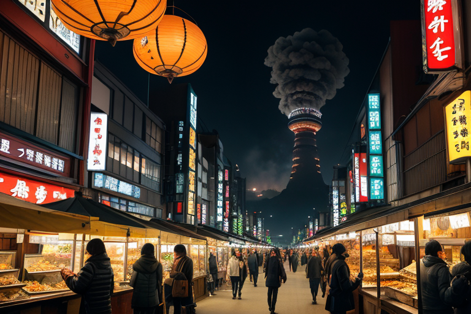
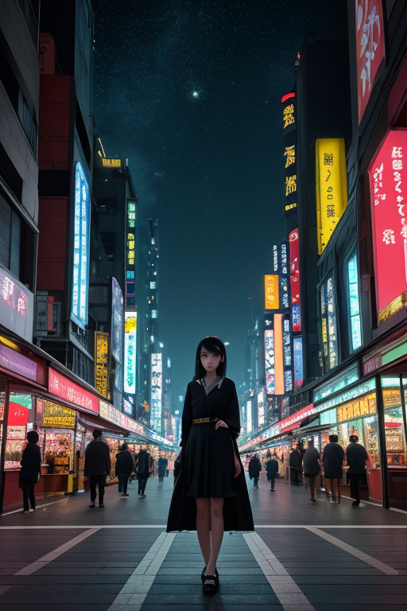
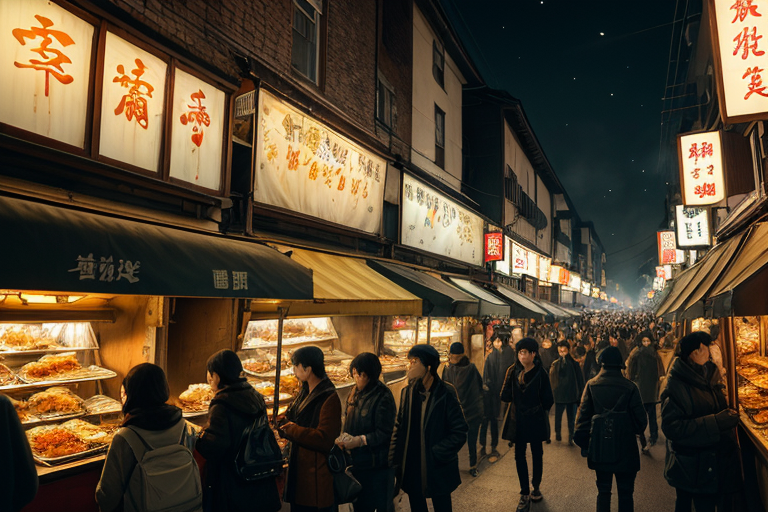
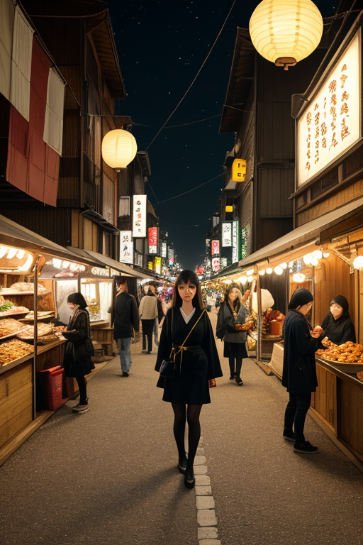
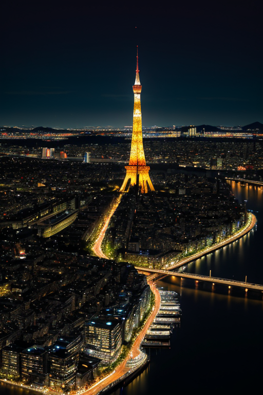

第一章 現実の福岡
あなたはまだ気づいていない。この土地にも、王がいることを。
中洲の屋台に、夜の匂いが満ちる。醤油の香り、炭火の煙、笑い声と氷の音。人々はもつ鍋を囲み、ビールを傾け、今日の商談や明日の野望を語る。ここはすべてが流れる場所だ。金が、情報が、そして人が。博多の街は古来、大陸への玄関だった。太宰府の政庁が外交と防衛の要であり、元寇の船団が押し寄せた海を、今は定期船が行き交う。
その活気の底で、微かな歪みが脈打つ。人々の欲望は時に膨張し、流れを滞らせ、軋ませる。過剰な熱狂、偏った集中、それは目に見えない亀裂を生み出す。ラーメンの湯気の向こう、山笠の舁き手たちの掛け声の隙間、タワーの展望窓に映る無数の光の一つひとつに、ほんの少しの「ずれ」が潜んでいる。
誰も気づかぬその歪みを、黒と金の衣をまとった一人の存在が見つめていた。彼は流れの中に立ち、騒ぎもせず、ただ手元の小さな輪を静かに回す。外へ向かう覚悟が、内へ向かう圧力とぶつかるその瞬間を、調整するために。

第二章 歪みの兆候
福岡タワーの展望室から見下ろす街は、常に動いている。博多湾を埋め立てた土地に林立するビルの灯り、深夜まで絶えることのない中洲のネオン、そして定期船が行き交う国際港。全ては「外」へと向かうエネルギーに満ちていた。ゲートリアは、その人流と物流のデータの奔流を、無数の光の軌跡として視覚化しながら監視していた。増え続ける訪日客、急拡大するオフィス需要、深夜の屋台にまで押し寄せる人々。膨張する欲望は、確かに都市を活性化させた。
しかし、妖精たちの報告は微妙な「ずれ」を示していた。特定の商業施設への人流が、物理的な容量をわずかに超え始めている。地下街の気圧が、人の熱気で予測値から外れる。志賀島への連絡船のダイヤが、需要の波に押され、ほんの数秒ずつ乱れがちだ。これらは些細なこと、誰も気にしないほどの誤差の集積に過ぎない。
玄関王は、タワーの窓辺に立って、手の中の小さな黒い輪を弄んでいた。輪は微かに振動し、金の縁がかすかに光る。彼の目には、街の活気そのものが、目に見えぬひび割れを生み出しているのが見えていた。外へ向かう勢いは、内側を空洞化させる圧力にもなり得る。彼は問うた。膨張だけが答えなのか、と。輪の振動は、まだ調整可能な、しかし無視すればやがて修復不能になる歪みの周波数を伝えていた。

第三章 王の葛藤
中洲の屋台街は、夜の欲望と熱気に満ちていた。笑い声、乾杯の音、もつ鍋の湯気が、狭い路地を埋め尽くす。玄関王は、その喧噪のただ中に立っていた。彼の目には、人々の「外へ出たい」という欲望が、金色の奔流となって流れ、同時に、その勢いが街の基盤を蝕む微細な亀裂を生んでいるのが見えていた。ゲートリアが彼の肩に止まり、ささやく。「膨張は必然です。止められますか？」
彼は答えられなかった。元寇の時、この地は外からの脅威に晒された。今、脅威は内側から生じている。過剰な人流、地盤への負荷、歪みの蓄積。彼は手の中の黒い輪を握りしめた。輪は熱を持ち、挑戦心が内側から疼く。彼はこの活気を愛していた。しかし、守護者として、その活気が自らを滅ぼす流れに加担することを許せるのか。微調整とは、時に膨張そのものを抑制することなのか。彼は、鍋から立ち上る湯気の向こうに、答えの見えない問いを見つめた。

第四章 妖精との対話
中洲の屋台街、夜の帳が下りた頃、玄関王の前にゲートリアが現れた。彼女は串焼きの煙をかすかに揺らしながら言った。「王よ、あなたは『出る』ことばかり考えている。でも、ここに『入ってくる』ものを見ていますか？」彼女の手には、客が落とした十円玉が載っていた。「商いとは、物や金の交換ではない。欲望と安心の交換です。博多ラーメンの一杯には、故郷を思い出す安心が、もつ鍋の煮込まれた内臓には、寒い夜を乗り切る活力への欲望が込められている。この交換が、この街の血流です」
王は黙って聞いた。ゲートリアは続ける。「歪みは、この交換が一方向に偏るときに生じます。全てを外へ輸出しようとする野心、あるいは外から全てを取り込もうとする欲望。どちらも、この地を空洞化させ、脆くします。あなたが問う『外へ出る覚悟』は、同時に『何を守り、ここに留めるか』という覚悟でもあるはずです」
彼女は十円玉をポケットにしまい、人混みに消えた。王は、屋台の明かりに照らされた人々の笑顔を見つめた。出るものと入るもの。その絶妙な均衡こそが、この玄関の王国を支えているのだと、彼は初めて実感した。

第五章 微調整と余韻
福岡タワーの展望台から、夜の街を見下ろす。博多湾を埋める船の灯火、中洲の喧騒、糸島へと続く海岸線の灯り。全てが流れ、交差し、この地を通過していく。王は目を閉じ、王国の「門」の感覚に集中した。ゲートリアとハカタリアからの報告が、微細な人流の乱れを伝えてくる。太宰府への参拝客の一部を志賀島行きのバスに誘導し、門司港の混雑を数分分散させる。誰も気づかない、ほんの些細な調整だ。
彼は、十円玉を掌で転がした。少女の言葉が残る。外へ出る覚悟。それは、戻ってくる場所を確かに持つこと。全てを流出させず、核を守り抜くこと。彼は感情を進化させたこの地の「密度」を、今は慈しむように感じていた。
次の瞬間、ごく小さな歪みが湾内で検知された。王は指をわずかに動かした。ほんの数秒、潮の流れを遅らせ、一本の漁船の進路を無意識に変える。船長は何も気づかず、いつものように網を上げる。
調整は終わった。王はタワーの影に溶け込み、明日もまた、この玄関で人々の「覚悟」の行方を見守るだろう。
あなたの町にも、王がいる。